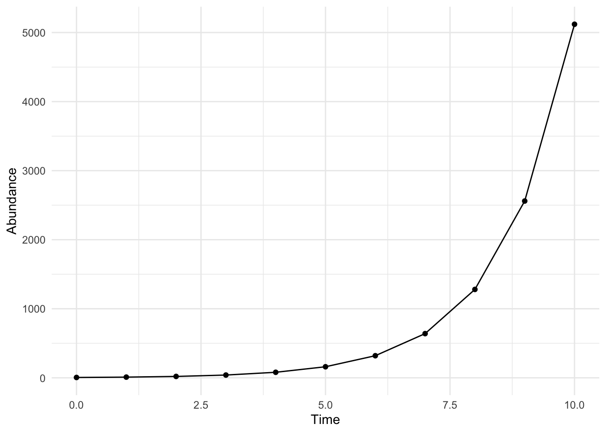
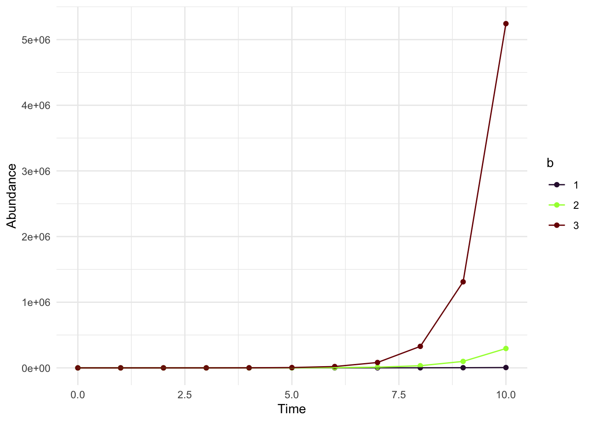

rabbit_growth <- function(time, initial, b){
###Insert model here
}Introduction
This is a simple blog post series for those new to R and ecological models. This series go through the mathematics and the R codes necessary for simulation. This is catered towards people with experience with ecology but would like a casual introduction to mathematical modeling.
Let’s start at the very beginning
A very good place to start is with population growth. Ecologists are fascinated by the rise and fall in the organism’s numbers. The simplest question an ecologist may start with: “If I have these initial number of organisms, and each produce this number of offspring, what should the total population be some time later?”
We use differential equations to model the change in the population size. Think of a second, now think of a nanosecond, and now think of the smallest slice of that nanosecond- the population is changing even within that tiny little time-frame. That may seem far-fetched. Generally, people are better about thinking of population growth in discrete time where with each discrete time-step (a day, a week, a month), there is an increase in the population.
Let us say that our organisms of interest are female rabbits and we describe their population size at time \(t\) as \(N_t\). Assume that every with each time step, each rabbit births the same number of new rabbits! This parameter is the birth rate \(b\). If we have the initial founding number as \(N_0\) then we can write that the next time step as:
\[ N_{1} = N_0 + bN_0. \]
For example, if there was originally 5 adults (\(N_0 = 5\)) and each produces 5 rabbits (\(b = 5\)), then we will have 25 new adults. Adding both parents and children, we have \(N_1 = 5 + (25) = 30\) Here, we assume that the offsprings are adults pretty much instantly. What does this look like for \(t = 2\)? It would look like:
\[ N_{2} = N(1) + 5N(1). \]If we substitute \(N(1) = 30\), then we have \(N_2 = 30 + 150 = 180\). It is extremely tedious of having to write each time-step separately (imagine having to do this for a 100 timesteps!)
By rearranging the equation, we can see (try it out first!)
\[ N_{1} = N_0(1 + b) \]
\[ N_{2} = N_{1}(1 + b). \]
This suggests that:
\[ N_{2} = N_0(1+b)(1+b). \]
So how about \(N_{3}\)? It would then be:
\[ N_{3} = N_{2} (1+b), \]
which is equivalent to:
\[ N_{3} = N_0(1+b)(1+b)(1+b). \]
That’s interesting! We basically just need to know the initial starting value (\(N_0\)) and we can raise the \((1+b)\) to the power of the time! But to predict the number of rabbits at time \(t\), we simply need to know the initial abundance (\(N_0\)) and the birth rate (\(b\)): \(N_t = N_0(1+b)^t\)
Coding it up
Let’s write a simple code. Please skip to the next section if you are comfortable with creating R functions. Hopefully, my little code will help transition readers into using desolve. Lets go step by step. Personally, I think beginners should start with learning functions as quickly as possible.
So how do you design a function for doing mathematical simulations? First, what do you want for your inputs? What are the parts of the model you want to vary? Well, time seems to make the most sense. Maybe I’m interested in seeing what happens in a week… or a thousand years later. The initial rabbit population (\(N_0\)) can also vary as well as the birth rate \(b\)! So for the input of the function, you should include the parameters that you’re interested in varying.
So I have a function called rabbit_growth and it takes as inputs: time, initial value, and the birth rate. By feeding different values in, we should be getting different values out!
Now what do we want for the output? For simulation outputs, we want both the time and the abundance at that time. So ‘time’ is the number of days we are interested in projecting the model out to. Let’s say we want 20 days. We can then create a vector called timesteps that goes from 0 to 20, in an increment of a day. Now we have the equation with the initial value and the birth rate (\(b\)). We can raise it to the power of the timesteps. So \(N_0 * (1+b)^t\) will you give a single numeric value. But multiplying it by a vector, R is smart to know that you want to multiply \(N_0 *(1+b)\) to each element of the vector. For example:
timesteps = seq(0,20)
print(timesteps) [1] 0 1 2 3 4 5 6 7 8 9 10 11 12 13 14 15 16 17 18 19 20print(paste("Single number:", 5 * (1+5))) # single numeric number #vector[1] "Single number: 30"5 * (1+5)^(timesteps) # a vector [1] 5.000000e+00 3.000000e+01 1.800000e+02 1.080000e+03 6.480000e+03
[6] 3.888000e+04 2.332800e+05 1.399680e+06 8.398080e+06 5.038848e+07
[11] 3.023309e+08 1.813985e+09 1.088391e+10 6.530347e+10 3.918208e+11
[16] 2.350925e+12 1.410555e+13 8.463330e+13 5.077998e+14 3.046799e+15
[21] 1.828079e+16Putting it all together, here is the completed functino.
rabbit_growth <- function(time, initial, b){
timesteps = seq(0,time)
abundance = initial * (1+b)^(timesteps)
###Try to keep the parameter that you are varying as a column for easier analysis
rabbit_df <- data.frame(time = timesteps, abundance = abundance,
initial = initial, b = b)
return(rabbit_df)
}My output is now a data.frame with the time, abundance, initial value, and birth rate.
There are many, many ways to solve this. Some people do for-loops! If you want to do it using for-loop, this is a perfect exercise for it! Now let’s plot it.
standard_rabbit <- rabbit_growth(10,5, 1)
print(standard_rabbit) time abundance initial b
1 0 5 5 1
2 1 10 5 1
3 2 20 5 1
4 3 40 5 1
5 4 80 5 1
6 5 160 5 1
7 6 320 5 1
8 7 640 5 1
9 8 1280 5 1
10 9 2560 5 1
11 10 5120 5 1I’m a ggplot lover, so we’re going to use ggplot2:
ggplot(standard_rabbit, aes(x = time, y = abundance))+ geom_point() + geom_line() + xlab("Time") + ylab("Abundance") +
theme_minimal()
Now what if we want to create a lot of different plots? So there is a faster way, but let’s do this for right now. Keeping everything else the same, let’s change \(b\) (the third input in the function “rabbit_growth”) and combine these outputs to create one big data frame.
standard_rabbit1 <- rabbit_growth(10,5, 1)
standard_rabbit2 <- rabbit_growth(10,5, 2)
standard_rabbit3 <- rabbit_growth(10,5, 3)
standard_rabbit_all <- rbind(standard_rabbit1,standard_rabbit2,
standard_rabbit3)ggplot(standard_rabbit_all, aes(x = time, y= abundance, color = as.factor(b), group = as.factor(b))) + geom_point() + geom_line() +
xlab("Time") + ylab("Abundance")+
scale_color_viridis(discrete = TRUE, name = "b",option = 'turbo')+
theme_minimal()
Wow you can see how drastically the population can grow depending on b!
Congratulations, you made your first simulation using one of the oldest model of discrete growth!
Discrete to Continuous
Now how does this relate to the continuous model? The secret is that the continuous model is just the discrete model but we’re making the time step smaller and smaller. Here’s a thought experiment, here I’m assuming that the rabbit is expanding day by day. Nothing about this model is stopping me from thinking of growth every… hour, minute, second, or nanosecond. However, if we want to have a model that is growth every 12 hours instead of 24 hours, we need to adjust \(b\) by multiplying it by \(\frac{1}{2}\). If it’s every hour, we need to adjust \(b\) by multiplying it by \(\frac{1}{24}\). So ultimately, we multiply \(b\) by some time step which we call: \(\Delta T\).
Now how does the step from discrete to continuous happen? Starting from this, we can move one of the N_0 \[ N_{t+1} = N_{t} + bN_{t} \Delta t. \] \[ N_{t+1} - N_t = b N_t \Delta t \] \[ \frac{N_{t+1} - N_t}{\Delta t} = {bN_t} \] As you let \(\delta T\) approach infinity, the discrete equation can then be described as a differential equation.
\[ \frac{dN}{dt} = {bN_t} \] Solving it, we get:
\[ N(t) = N_0exp(b(t)) \]
Next step! How do you numerically solve a differential equation.